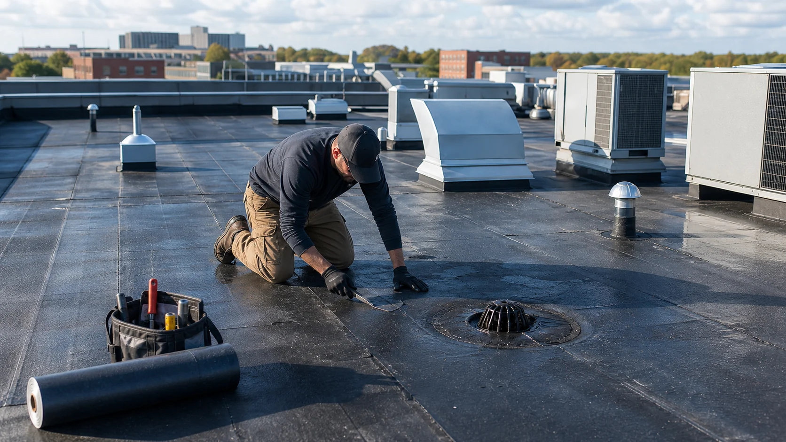
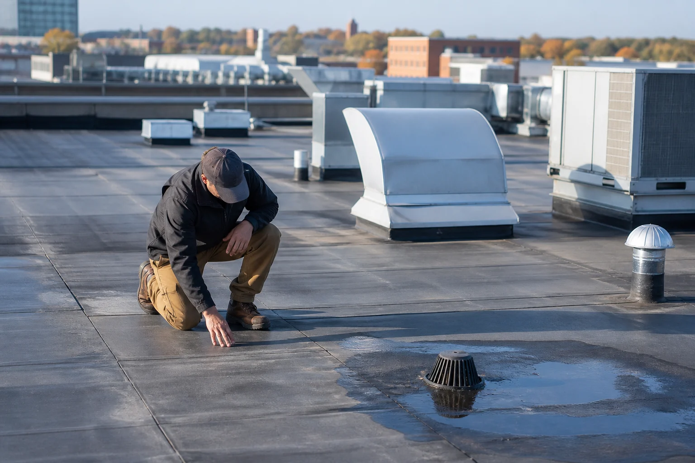

Building roof review
Offices, retail, mixed-use, warehouses, rentals, and small managed properties.
Find low-slope roof help for small buildings, shops, offices, rentals, managed properties, leak tracing, and maintenance planning.
A commercial roof issue can affect tenants, inventory, equipment, customers, and business hours. Low-slope systems also fail differently than steep residential shingles, especially around seams, drains, rooftop units, terminations, and ponding areas.
RoofLink helps property contacts organize the request so independent commercial providers can respond with the right expectations for access, urgency, roof type, and decision-making.

These examples help you describe the request clearly before independent providers follow up.
Offices, retail, mixed-use, warehouses, rentals, and small managed properties.
Punctures, open seams, flashing, terminations, drains, parapets, rooftop units, and scuppers.
Priority repairs, leak logs, photo notes, budget timing, and replacement planning.
RoofLink helps organize the details. You still choose who to speak with, what to verify, and whether to hire.
Share roof type if known, access point, operating hours, tenant constraints, and leak history.
Describe interior leak location, rooftop equipment above it, drains nearby, and whether ponding water is visible.
Ask what needs immediate repair, what should be monitored, and what belongs in a maintenance plan.
Discuss scheduling, safety, tenant notice, odor/noise concerns, and business interruption risk.

Provider replies are useful when they help you understand scope, timing, risks, and next steps. Use the first conversation to ask direct questions before approving work.
Access and safetyProvider follow-up should account for roof access, business hours, and site constraints.
Repair versus maintenanceA small patch may not solve ponding, open seams, or neglected drains.
Documentation qualityGood notes support budgeting, tenant communication, and future maintenance.
Some roof problems are not emergencies, but these signs usually deserve faster provider follow-up.
Standing water stresses membranes and often points to drainage problems.
UV, seams, punctures, and rooftop traffic can create slow leaks.
Leaks near inventory, offices, or customer spaces can escalate quickly.